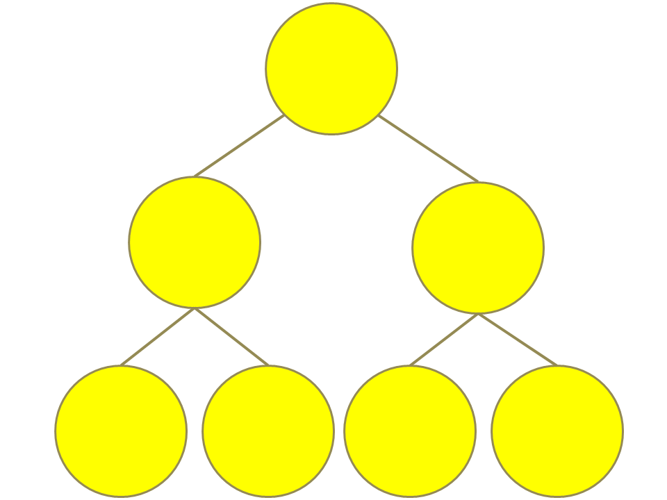
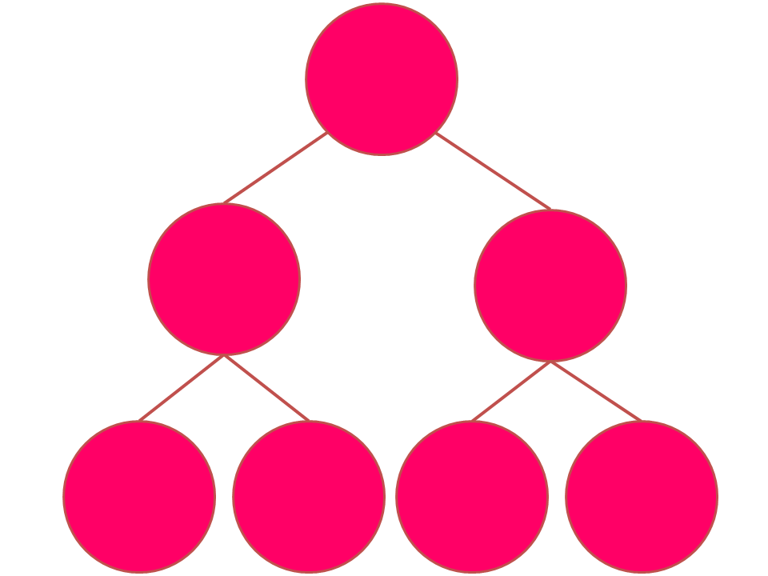
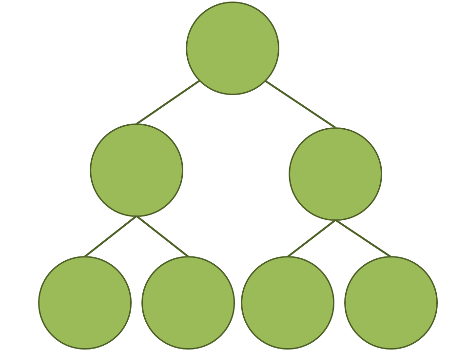
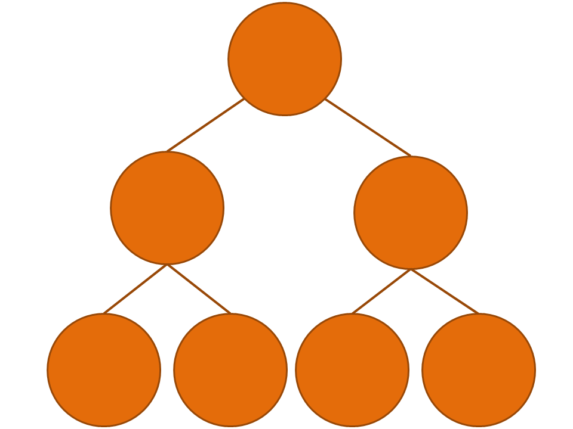

Nathalie Abadie
73 avenue de Paris · 94165 Saint-Mandé CEDEX · (+33)1 43 98 80 03 ·
nathalie-f.abadie@ign.fr
Researcher in GI Science, knowledge capture, representation and use for geospatial ressources matching.
Member of the STRUDEL research team
Chargée de recherche IGN en sciences de l'information géographique, acquisition, représentation et mise en oeuvre de connaissances pour l'appariement de ressources géographiques.
Membre de l'équipe STRUDEL
Research Interests
Sujets de recherche
Geographic or geohistorical data publishing on the Web
Représentation de données géographiques ou géohistoriques pour le Web de données
Knowledge acquisition and representation on geographic data: semantics, genealogy and quality
Qualification des sources de données géoréférencées: caractérisation de données, qualité des données, géoréférencement
News
Actualité
Experience
Past jobs and roles in research
Expérience
Parcours professionnel en recherche
-
2005-2007
Ingénieur d'études
Survey Engineer
Étude sur l’exploitation de connaissances issues des spécifications pour l’intégration de base de données topographiques. Création d’une taxonomie de concepts topographiques à partir des textes des spécifications des bases de données de l’IGN.
Studied the use of specifications knowledge for geographical databases integration. Created a taxonomy of geographic concepts from geographical databases specifications texts.
-
2007-2012
Doctorante
PhD student
Thèse de doctorat en Sciences et Technologies de l’Information Géographique (École doctorale MSTIC, Université Paris Est): Formalisation, acquisition et mise en œuvre de connaissances pour l’intégration virtuelle de bases de données géographiques: Les spécifications au cœur du processus d’intégration. Thèse dirigée par Anne Ruas et encadrée par Sébastien Mustière.
Completed a PhD thesis in Geographic Information Sciences (Doctoral School MSTIC, University of Paris Est): Formalisation, Acquisition and Implementation of Specifications Knowledge for Geographic Databases Integration. Thesis advisor: Anne Ruas, co-supervisor: Sébastien Mustière.
-
2010-2012
Responsable du module "SIG et Internet"
Coordinator of the master's degree training module "Web Geographic Information Systems"
Master 2 Information Géographique et Master 2 Systèmes d'Informations et Applications Web, ENSG-UPEM
-
2010-2013
Co-responsable du module "Bases de données relationnelles et géographiques"
Co-coordinator of the master's degree training module "Relational and geographical databases"
Master 2 Information Géographique, Master 2 Systèmes d'Informations et Applications Web, ENSG-UPEM
-
2010-2014
Responsable de l'action de recherche
Head of research team
Sur les infrastructures de données géographiques puis sur la qualification et l’interopérabilité des référentiels de données géographiques
On "Spatial Data Infrastructures" and then "Quality and interoperability of geographic reference datasets"
-
November 2012 - Present
Novembre 2012 - Aujourd'hui
Chargée de recherche au laboratoire LaSTIG (IGN)
Researcher at LaSTIG laboratory (IGN)
Dans l'équipe COGIT (2012-2018), puis l'équipe STRUDEL (depuis 2018).
Member of the COGIT research team (from 2012 to 2018), then member of the STRUDEL resarch team (since 2018)
-
2016 - Present
2016 - Aujourd'hui
Coordinator of the master's degree training module "Geographic information representing and handling"
Responsable du module "Modélisation et manipulation de l’information géographique"
Master 2 IGAST, ENSG-UPEM
-
2017 - Present
2017 - Aujourd'hui
Responsable du module "Web sémantique géographique"
Coordinator of the master's degree training module "Geospatial Semantic Web"
Master 2 TSI, ENSG-UPEM
Education
Titres et diplômes
Université Paris-Est
Paris-Est University
PhD in Geographical Information Science, Paris Est university
Doctorat en Sciences et Technologies de l'Information Géographique, université de Paris Est
2007 - 2012
École Nationale des Sciences Géographiques
Advanced Master in Geographic Information Systems Architecture - French post-graduate program (Master's level)
Mastère spécialisé en Architecture des Systèmes d'Information Géographiques
2004 - 2005
École Nationale des Sciences Géographiques
Master’s in Geographical Information Science Engineering in ENSG
Diplôme d'ingénieur de l'Ecole Nationale des Sciences Géographiques
2002 - 2005
Publications
[ACL] Journals
[ACL] Revues répertoriées par l'HCERES
[ACLN] Journals
[ACLN] Revues non répertoriées
[ASCL] Others
[ASCL] Revues sans comité de lecture
[ACTI] Conferences
[ACTI] Conférences internationales
[ACTN] Conferences
[ACTN] Conférences nationales
[COM] Conferences
[COM] Communications orales
[OS] Books and Chapters
[OS] Ouvrages ou chapitres d'ouvrages scientifiques
[DO] Books and Chapters
[DO] Directions d'ouvrages scientifiques
[AFF] Posters
[AFF] Posters
[AP] Preprints
[AP] Preprints
[TH] Dissertations
[TH] Thèse
[INV] Invited Talks
[INV] Conférences invitées
[PV] Popularization
[PV] Publications et communications de vulgarisation
Projects
Projets
On-going and past research projects
Projets partenariaux en cours et terminés
SoDuCo
Étude de l'évolution des structures spatiales urbaines en relation avec les pratiques sociales et professionnelles de la population: application à l'évolution de Paris de 1789 à 1950.
Study of the evolution of urban spatial structures with respect to the social and professional practices of the population: application to the evolution of Paris from 1789 to 1950.
ALEGORIA
Valorisation de fonds institutionnels iconographiques décrivant le territoire français à différentes époques allant de l’entre-deux-guerres à nos jours.
Link, browse and visualize digitized cultural heritage images of the french territory at different periods from the inter-war period to the present with a geographic image reference dataset.
Référentiels géohistoriques sémantisés pour les humanités
Semantic reference geohistorical datasets for humanities
Représentation et publication de référentiels géohistoriques de lieux nommés sur le Web de données.
Explore Web of data principles to foster the interoperability of geohistorical datasets.
Datalift
Développement d’une plateforme pour la publication et l’interconnexion de données sur le Web de données.
Implementing a platform for publishing and interlinking data on the Web.
GEONTO
Création, comparaison et exploitation d’ontologies topographiques hétérogènes.
Creating, comparing and using heterogeneous topographic ontologies.
Other research activities
Autres activités de recherche
Vocabularies
Publication de vocabulaires

Systèmes de coordonnées de référence
Coordinates Reference Systems
Ontology for describing coordinates reference systems consistently with ISO TC/211. Ontologie pour la description de systèmes de coordonnées de référence conforme à l'ISO TC/211.

Unités administratives françaises
French administrative units
Ontologie décrivant le découpage administratif de la France métropolitaine, des départements d'outre-mer, ou de la collectivité départementale de Mayotte. Ontology describing the administrative division of metropolitan France, the overseas departments, or the departmental community of Mayotte.

Territoire et infrastructures
Territory and infrastructures
Ontologie décrivant les éléments du territoire et ses infrastructures. Elle reprend l'essentiel du vocabulaire de la BDTOPO V2.0(IGN) et vise à couvrir l'ensemble des entités topographiques et administratives du territoire. Ontology describing the elements of the territory and its infrastructures. It covers most of the vocabulary of the BDTOPO V2.0(IGN) and aims to cover all the topographic and administrative entities of the national territory.

Spécifications de saisie et qualité des données
Data implementing rules and quality
Ontologie décrivant les règles de saisie et la qualité des références spatiales directes (c.-à-d. des géométries). Ontology describing the data capture rules and the quality of direct spatial references (ie. geometries).Other research activities
Autres activités de recherche
- Co-porteuse de l'action prospective du GDR CNRS MAGIS sur les graphes de connaissances géohistoriques depuis Nov. 2019
- Membre du comité de programme de la conférence EGC depuis 2017
- Co-chair of the GDR MAGIS CNRS commission on Geohistorical Knowledge Graphs since Nov. 2019
- Member of the program committee of the EGC conference series since 2017
Supervisions
Encadrements
- Helen Mair Rawsthorne (PhD Student, 2020-2023), co-supervised with Éric Kergosien (Geriico - University of Lille), Éric Saux (IreNAV - École Navale) and Cécile Duchêne (ENSG/MEIG-LASTIG, IGN)
- Margarita Khokhlova (Postdoc, 2018-2020), co-supervised with Valérie Gouet (LASTIG) and Liming Chen (LIRIS, École Centrale Lyon)
- Abdelfettah Feliachi (PhD, 2017), co-supervised with Bénédicte Bucher (LASTIG) and Fayçal Hamdi (Cedric, CNAM)
- Helen Mair Rawsthorne (Doctorante, 2020-2023), co-encadrée avec Éric Kergosien (Geriico - Université de Lille), Éric Saux (IreNAV - École Navale) et Cécile Duchêne (ENSG/MEIG-LASTIG, IGN)
- Margarita Khokhlova (Postdoc, 2018-2020), co-encadrée avec Valérie Gouet (LASTIG) et Liming Chen (LIRIS, École Centrale Lyon)
- Abdelfettah Feliachi (Doctorat, 2017), thèse dirigée par Bénédicte Bucher (LASTIG) et co-encadrée avec Fayçal Hamdi (Cedric, CNAM)
Teaching
Enseignement
- Année scolaire 2020–2021
- Responsable du module Modélisation et manipulation de l’information géographique, M2IGAST, ENSG–UPEM.
- Introduction à la modélisation orientée objet: UML – 3h CM
- Rappels: BDD relationnelles – 1h30 CM + 1h30 TD
- Une brève histoire de l’information géographique vectorielle – 3h CM
- Introduction à PostGIS – 6h TP
- PostGIS avancé: analyse spatiale – 6h TP
- Topologie des données géographiques sur des réseaux: mise en œuvre avec PgRouting – 1h30 CM + 4h30 TP
- Gestion de la cohérence des données, développement de triggers et de fonctions PL/pgSQL – 3h TP
- Manipuler des données géoréférencées dans un SIG : géoréférencement d'images avec QGIS - 3h TP
- Année scolaire 2019–2020
- Responsable du module Modélisation et manipulation de l’information géographique, M2IGAST, ENSG–UPEM.
- Introduction à la modélisation orientée objet: UML – 3h CM
- Rappels: BDD relationnelles – 1h30 CM + 1h30 TD
- Une brève histoire de l’information géographique vectorielle – 3h CM
- Introduction à PostGIS – 6h TP
- PostGIS avancé: analyse spatiale – 6h TP
- Topologie des données géographiques sur des réseaux: mise en œuvre avec PgRouting – 1h30 CM + 4h30 TP
- Gestion de la cohérence des données, développement de triggers et de fonctions PL/pgSQL – 3h TP
- Responsable du module Web sémantique géographique, M2TSI, ENSG–UPEM.
- Du Web documentaire au Web de données: publier, décrire et manipuler des données sur le Web – 1h30 CM
- Négociation de contenu et requêtes SPARQL – 1h30 TP
- Des mots et du sens: nommer et décrire les types et les propriétés des ressources à l’aide de vocabulaires RDFS et OWL – 1h30 CM et 1h30 TP
- Des systèmes d’information géographique au Web de données géographiques – 1h30 CM + 1h30 TP
- Analyse d'articles scientifiques sur le Web de données géographiques – 6h TP en autonomie
- Année scolaire 2018–2019
- Responsable du module Modélisation et manipulation de l’information géographique, M2IGAST, ENSG–UPEM.
- Introduction à la modélisation orientée objet: UML – 3h CM
- Rappels: BDD relationnelles – 1h30 CM + 1h30 TD
- Une brève histoire de l’information géographique vectorielle – 3h CM
- Introduction à PostGIS – 3h TP
- PostGIS avancé – 3h TP + 3h TP en autonomie partielle
- Topologie des données géographiques sur des réseaux: mise en œuvre avec PgRouting – 1h30 CM + 1h30 TP + 3h TP en autonomie partielle
- Développement de triggers et gestion de la cohérence des données – 1h30 CM + 1h30 TP + 3h TP en autonomie partielle
- Responsable du module Web sémantique géographique, M2TSI, ENSG–UPEM.
- Du Web documentaire au Web de données: publier, décrire et manipuler des données sur le Web – 3h CM
- Négociation de contenu et requêtes SPARQL – 3h TP
- Des mots et du sens: nommer et décrire les types et les propriétés des ressources à l’aide de vocabulaires RDFS et OWL – 1h30 CM et 1h30 TP
- Des systèmes d’information géographique au Web de données géographiques – 1h30 CM + 1h30 TP
- Interconnexion de données sur le Web – 1h30 CM + 1h30 TP
- Année scolaire 2017–2018
- Responsable du module Modélisation et manipulation de l’information géographique, M2IGAST, ENSG–UPEM.
- Introduction à la modélisation orientée objet: UML – 3h CM
- Rappels: BDD relationnelles – 1h30 CM + 1h30 TD
- Une brève histoire de l’information géographique vectorielle – 3h CM
- Introduction à PostGIS – 3h TP
- PostGIS avancé – 3h TP + 3h TP en autonomie partielle
- Topologie des données géographiques sur des réseaux: mise en œuvre avec PgRouting – 1h30 CM + 1h30 TP + 3h TP en autonomie partielle
- Développement de triggers et gestion de la cohérence des données – 1h30 CM + 1h30 TP + 3h TP en autonomie partielle
- Responsable du module Web sémantique géographique, M2TSI, ENSG–UPEM.
- Du Web documentaire au Web de données: publier, décrire et manipuler des données sur le Web – 3h CM
- Négociation de contenu et requêtes SPARQL – 3h TP
- Des mots et du sens: nommer et décrire les types et les propriétés des ressources à l’aide de vocabulaires RDFS et OWL – 1h30 CM et 1h30 TP
- Des systèmes d’information géographique au Web de données géographiques – 1h30 CM + 1h30 TP
- Interconnexion de données sur le Web – 1h30 CM + 1h30 TP
- Développement d’une application interactive de visualisation cartographique de données DBpedia – 3h TP
- Année scolaire 2016–2017
- Responsable du module Modélisation et manipulation de l’information géographique, M2IGAST, ENSG–UPEM.
- Introduction à la modélisation orientée objet: UML – 3h CM
- Rappels: BDD relationnelles – 3h CM + 6h TP
- Bases de données géographiques vectorielles – 6h CM + 6h TP
- Mise en œuvre de données GPS et Open Data: analyse des formats et de la précision géométrique des données – 3h TP en autonomie partielle
- Autres cours et Travaux Pratiques:
- Introduction aux bases de données relationnelles et géographiques – Licence professionnelle "géomatique et environnement" – ENSG, Université Paris 1 Panthéon–Sorbonne – 12h CM + 18h TP
- Année scolaire 2015–2016
- Cours et Travaux Pratiques:
- Introduction aux bases de données relationnelles et géographiques – M2 IGAST - 9h CM + 6h TP
- Introduction aux bases de données relationnelles et géographiques – Licence professionnelle "géomatique et environnement" – ENSG, Université Paris 1 Panthéon–Sorbonne – 12h CM + 18h TP
- Année scolaire 2014–2015
- Cours et Travaux Pratiques:
- Introduction aux données géographiques – Séminaire EHESS – janvier 2015 – 8h CM + 8h TP
- Introduction aux fonctionnalités des SIG – Séminaire EHESS – février 2015 – 4h CM + 8h TP
- Introduction aux bases de données relationnelles et géographiques – Licence professionnelle "géomatique et environnement" – ENSG, Université Paris 1 Panthéon–Sorbonne – 12h CM + 18h TP
- Année scolaire 2013–2014
- Cours et Travaux Pratiques:
- Modélisation et exploitation de bases de données géographiques – Master 2 Information Géographique, ENSG, UPEM – 6h CM + 9h TP
- Modélisation et exploitation de bases de données géographiques – Licence professionnelle "géomatique et environnement" – ENSG, Université Paris 1 Panthéon–Sorbonne – 9h CM
- Appariement de données géographiques – Master 2 IG, ENSG, UPEM – 1h30 CM
- Année scolaire 2012–2013
- Co-responsable du module "Bases de données relationnelles et géographiques" – Master 2 IG et Master 2 Systèmes d’Informations et Applications Web, ENSG, UPEM.
- Modélisation et exploitation de bases de données géographiques – Master 2 IG et Master 2 SIAW, ENSG, UPEM – 6h CM + 12h TP
- Les infrastructures de données géographiques – Master 2 IG et Master 2 SIAW, ENSG, UPEM – 3h CM
- Catalogage de données géographiques – Master 2 IG, ENSG, UPEM – 3h CM
- Appariement de données géographiques – Master 2 IG et Master 2 SIAW, ENSG, UPEM – 1h30 CM
- Année scolaire 2011–2012
- Co-responsable du module "Bases de données relationnelles et géographiques" - Master 2 IG et Master 2 Systèmes d’Informations et Applications Web - ENSG, UPEM.
- Responsable du module "SIG et Internet" - Master 2 IG et Master 2 Systèmes d’Informations et Applications Web - ENSG, UPEM.
- Modélisation et exploitation de bases de données géographiques – Master 2 IG et Master 2 SIAW – ENSG, UPEM – 6h CM + 12h TP
- Les infrastructures de données géographiques – Master 2 IG et Master 2 SIAW – ENSG, UPEM – 3h CM
- Catalogage de données géographiques – Master 2 IG – ENSG, UPEM – 3h CM
- Appariement de données géographiques – Master 2 IG – ENSG, UPEM – 3h CM
- Les coordonnées géographiques – M1 SIIG3T – Université de Montpellier 3 – 2h CM + 3h TD
- Année scolaire 2010–2011
- Co-responsable du module "Bases de données relationnelles et géographiques" - Master 2 IG et Master 2 Systèmes d’Informations et Applications Web - ENSG, UPEM.
- Responsable du module "SIG et Internet" - Master 2 IG et Master 2 Systèmes d’Informations et Applications Web - ENSG, UPEM.
- Modélisation et exploitation de bases de données géographiques – Master 2 IG et Master 2 SIAW – ENSG, UPEM – 6h CM + 12h TP
- Les infrastructures de données géographiques – Master 2 IG et Master 2 SIAW – ENSG, UPEM – 3h CM
- Catalogage de données géographiques – Master 2 IG – ENSG, UPEM – 3h CM
- Appariement de données géographiques – Master 2 IG – ENSG, UPEM – 3h CM
- Autres cours et Travaux Pratiques:
- Les coordonnées géographiques – M1 SIIG3T – Université de Montpellier 3 – 2h CM + 3h TD
- Modélisation UML, bases de données relationnelles et géographiques – Master 2 Carthagéo, ENSG, Universités Paris 1 et 7 – 9h CM + 9h TP
- Modélisation UML, et bases de données relationnelles et TP Access – Licence professionnelle "géomatique et environnement" – ENSG, Université Paris 1 Panthéon–Sorbonne – 9h CM + 15h TP.
- Année scolaire 2009–2010
- Cours et Travaux Pratiques:
- Qualité des données géographiques – Master 2 SIG – ENSG, UPEM – 3h CM
- Appariement et mise à jour de données géographiques – Master 2 SIG – ENSG, UPEM – 3h CM
- Les données géographiques: Systèmes de coordonnées, Acquisition des données géographiques, Intégration de données géographiques – M1 SIIG3T – Université de Montpellier 3 – 5h CM + 5h TD
- Modélisation UML, bases de données relationnelles et géographiques – Master 2 Carthagéo, ENSG, Universités Paris 1 et 7 – 6h CM + 12h TP
- Année scolaire 2008–2009
- Cours et Travaux Pratiques:
- Modélisation UML, Bases de données relationnelles et Access – Master 2 Carthagéo, ENSG, Universités Paris 1 et 7 – 6h CM + 12h TP
- Intégration de données géographiques – Master 2 Carthagéo, ENSG, Universités Paris 1 et 7 – 3h TD
- Information géographique et normalisation – Première année de branche "Génie des Systèmes Urbains", Université de Technologie de Compiègne – 2h CM
- Classification des données géographiques – Master 2 GéoEnvironnement et Géorisques, UPEM, Mines de Paris – 3h CM
- Modélisation UML, Bases de données relationnelles et Access – Formations SIGCC et GEC, ENSG – 12h CM + 12h TP
- MapInfo avec Access – Formations SIGCC et GEC, ENSG – 6h TP
- Qualité des données géographiques – Master 2 SIG – ENSG, UPEM – 3h CM + 3h TP
- Appariement et mise à jour de données géographiques – Master 2 SIG – ENSG, UPEM – 3h CM
- Les données géographiques: coordonnées géographiques, modélisation, niveau de détail – M1 SIIG3T – Université de Montpellier 3 – 9h CM + 4h30 TD
- Année scolaire 2007–2008
- Cours et Travaux Pratiques:
- Modélisation UML, Bases de données relationnelles et Access – Master 2 Carthagéo, ENSG, Universités Paris 1 et 7 – 6h00 CM + 12h TP
- Classification des données géographiques – Master 2 GéoEnvironnement et Géorisques, UPEM, Mines de Paris, 3h CM
- La représentation du territoire: données publiques et Géoportail – Master 2 GéoEnvironnement et Géorisques, UPEM, Mines de Paris, 3h CM
- Modélisation UML, Bases de données relationnelles et Access – Formations SIGCC et GEC, ENSG – 12h CM + 12h TP
- Les données géographiques: coordonnées géographiques, modélisation, niveau de détail – M1 SIIG3T – Université de Montpellier 3 – 9h CM + 4h30 TD
- Année scolaire 2006–2007
- Cours et Travaux Pratiques:
- Classification des données géographiques – Master 2 GéoEnvironnement et Géorisques, UPEM, Mines de Paris, 3h CM
- Modélisation UML, Bases de données relationnelles et Access – Formations SIGCC et GEC, ENSG – 6h CM + 9h TP
- Cours et Travaux Pratiques:
- Cours et Travaux Pratiques:
- Cours et Travaux Pratiques:
- Cours et Travaux Pratiques:
- Cours et Travaux Pratiques:
- Cours et Travaux Pratiques:
- Cours et Travaux Pratiques:
- Cours et Travaux Pratiques:
- Cours et Travaux Pratiques:
- Cours et Travaux Pratiques:
- Cours et Travaux Pratiques:
- Academic year 2020–2021
- Coordinator of the master's degree training module "Geographic information representing and handling", Master IGAST, ENSG–UPEM.
- Introduction to Object-Oriented Modeling with UML – 3h L
- Relational databases: reminder of principles – 1h30 L + 1h30 HO
- Strutured geographic information, from the first GIS to now – 3h L
- Introduction to PostGIS – 6h HO
- Advanced PostGIS: spatial analysis – 6h HO
- Topology for geographic data about networks: application with PgRouting – 1h30 L + 4h30 HO
- Data consistency management, triggers and PL/pgSQL functions development – 3h HO
- Using a GIS to georeference images : a pratical use case with QGIS - 3h HO
- Academic year 2019–2020
- Coordinator of the master's degree training module "Geographic information representing and handling", Master IGAST, ENSG–UPEM.
- Introduction to Object-Oriented Modeling with UML – 3h L
- Relational databases: reminder of principles – 1h30 L + 1h30 HO
- Strutured geographic information, from the first GIS to now – 3h L
- Introduction to PostGIS – 6h HO
- Advanced PostGIS: spatial analysis – 6h HO
- Topology for geographic data about networks: application with PgRouting – 1h30 L + 4h30 HO
- Data consistency management, triggers and PL/pgSQL functions development – 3h HO
- Coordinator of the master's degree training module "Geospatial Semantic Web", Master TSI, ENSG–UPEM.
- From the documentary Web to the Web of data: publishing, describing and handling data on the Web – 1h30 L
- Content negociation and SPARQL queries – 1h30 HO
- Words and semantics: naming and describing types and properties of resources with RDFS and OWL vocabularies – 1h30 L et 1h30 HO
- From the Geographic Information Systems to the geospatial semantic Web – 1h30 L + 1h30 HO
- Analysis of geospatial semantic Web scientific publications – 6h autonomous HO
- Academic year 2018–2019
- Coordinator of the master's degree training module "Geographic information representing and handling", Master IGAST, ENSG–UPEM.
- Introduction to Object-Oriented Modeling with UML – 3h L
- Relational databases: reminder of principles – 1h30 L + 1h30 HO
- Strutured geographic information, from the first GIS to now – 3h L
- Introduction to PostGIS – 3h HO
- Advanced PostGIS – 3h HO + 3h autonomous HO
- Topology for geographic data about networks: application with PgRouting – 1h30 L + 1h30 HO + 3h autonomous HO
- Trigger development and data consistency management – 1h30 L + 1h30 HO + 3h autonomous HO
- Coordinator of the master's degree training module "Geospatial Semantic Web", Master TSI, ENSG–UPEM.
- From the documentary Web to the Web of data: publishing, describing and handling data on the Web – 3h L
- Content negociation and SPARQL queries – 3h HO
- Words and semantics: naming and describing types and properties of resources with RDFS and OWL vocabularies – 1h30 L et 1h30 HO
- From the Geographic Information Systems to the geospatial semantic Web – 1h30 L + 1h30 HO
- Interlinking geographic data on the Web – 1h30 L + 1h30 HO
- Academic year 2017–2018
- Coordinator of the master's degree training module "Geographic information representing and handling", Master IGAST, ENSG–UPEM.
- Introduction to Object-Oriented Modeling with UML – 3h L
- Relational databases: reminder of principles – 1h30 L + 1h30 HO
- Strutured geographic information, from the first GIS to now – 3h L
- Introduction to PostGIS – 3h HO
- Advanced PostGIS – 3h HO + 3h autonomous HO
- Topology for geographic data about networks: application with PgRouting – 1h30 L + 1h30 HO + 3h autonomous HO
- Trigger development and data consistency management – 1h30 L + 1h30 HO + 3h autonomous HO
- Coordinator of the master's degree training module "Geospatial Semantic Web", Master TSI, ENSG–UPEM.
- From the documentary Web to the Web of data: publishing, describing and handling data on the Web – 3h L
- Content negociation and SPARQL queries – 3h HO
- Words and semantics: naming and describing types and properties of resources with RDFS and OWL vocabularies – 1h30 L et 1h30 HO
- From the Geographic Information Systems to the geospatial semantic Web – 1h30 L + 1h30 HO
- Interlinking geographic data on the Web – 1h30 L + 1h30 HO
- Web mapping of DBpedia georeferenced data - 3h HO
- Academic year 2016–2017
- Coordinator of the master's degree training module "Geographic information representing and handling", Master IGAST, ENSG–UPEM.
- Introduction to Object-Oriented Modeling with UML – 3h L
- Relational databases: reminder of principles – 3h L + 6h HO
- Vector geographic databases – 6h L + 6h HO
- GPS and Open Data handling: data models and quality issues – 3h autonomous HO
- Other lecture courses and hands-on sessions:
- Introduction to relational and geographic databases – Bachelor degree "geomatics and environment" – ENSG, University Paris 1 Panthéon–Sorbonne – 12h L + 18h HO
- Academic year 2015–2016
- Lecture courses and hands-on sessions:
- Introduction to relational and geographic databases – Master IGAST - 9h L + 6h HO
- Introduction to relational and geographic databases – Bachelor degree "geomatics and environment" – ENSG, University Paris 1 Panthéon–Sorbonne – 12h L + 18h HO
- Academic year 2014–2015
- Lecture courses and hands-on sessions:
- Introduction to geographic data – School of Advanced Studies in the Social Sciences seminary – jan 2015 – 8h L + 8h HO
- Introduction to Geographic Information Systems – School of Advanced Studies in the Social Sciences seminary – feb 2015 – 4h L + 8h HO
- Introduction to relational and geographic databases – Bachelor degree "geomatics and environment" – ENSG, University Paris 1 Panthéon–Sorbonne – 12h L + 18h HO
- Academic year 2013–2014
- Lecture courses and hands-on sessions:
- Geographic databases modeling and handling – Master Geographic Information, ENSG, UPEM – 6h L + 9h HO
- Geographic databases modeling and handling – Bachelor degree "geomatics and environment" – ENSG, University Paris 1 Panthéon–Sorbonne – 9h L
- Geographic data matching – Master Geographic Information, ENSG, UPEM – 1h30 L
- Academic year 2012–2013
- Co-coordinator of the master's degree training module "Relational and geographic databases" – Master Geographic Information (IG) and Master Information Systems and Web Applications (SIAW), ENSG, UPEM.
- Geographic databases modeling and handling – Master IG and Master SIAW, ENSG, UPEM – 6h L + 12h HO
- Spatial Data Infrastructures – Master IG and Master SIAW, ENSG, UPEM – 3h L
- Geographic data cataloging – Master IG, ENSG, UPEM – 3h L
- Geographic data matching – Master IG and Master SIAW, ENSG, UPEM – 1h30 L
- Academic year 2011–2012
- Co-coordinator of the master's degree training module "Relational and geographic databases" – Master Geographic Information (IG) and Master Information Systems and Web Applications (SIAW), ENSG, UPEM.
- Coordinator of the master's degree training module "Web GIS" - Master IG and Master SIAW - ENSG, UPEM.
- Geographic databases modeling and handling – Master IG and Master SIAW, ENSG, UPEM – 6h L + 12h HO
- Spatial Data Infrastructures – Master IG and Master SIAW, ENSG, UPEM – 3h L
- Geographic data cataloging – Master IG, ENSG, UPEM – 3h L
- Geographic data matching – Master IG – ENSG, UPEM – 3h L
- Geographic coordinates handling – Master SIIG3T – University of Montpellier 3 – 2h L + 3h HO
- Academic year 2010–2011
- Co-coordinator of the master's degree training module "Relational and geographic databases" – Master Geographic Information (IG) and Master Information Systems and Web Applications (SIAW), ENSG, UPEM.
- Coordinator of the master's degree training module "Web GIS" - Master IG and Master SIAW - ENSG, UPEM.
- Geographic databases modeling and handling – Master IG and Master SIAW, ENSG, UPEM – 6h L + 12h HO
- Spatial Data Infrastructures – Master IG and Master SIAW, ENSG, UPEM – 3h L
- Geographic data cataloging – Master IG, ENSG, UPEM – 3h L
- Geographic data matching – Master IG – ENSG, UPEM – 3h L
- Other lecture courses and hands-on sessions:
- Geographic coordinates handling – Master SIIG3T – University of Montpellier 3 – 2h L + 3h HO
- Object-Oriented Modeling with UML, relational and geographic databases – Master Carthagéo, ENSG, Universities of Paris 1 and 7 – 9h L + 9h HO
- Object-Oriented Modeling with UML, relational databases and hands-on session with Access – Bachelor degree "geomatics and environment" – ENSG, University of Paris 1 Panthéon–Sorbonne – 9h L + 15h HO.
- Academic year 2009–2010
- Lecture courses and hands-on sessions:
- Geographic data quality – Master Geographic Information Science (SIG)– ENSG, UPEM – 3h L
- Geographic data matching and update – Master SIG – ENSG, UPEM – 3h L
- Geographic data handling: Coordiantes reference systems, geographic data capture, geographic data interoperability – Master SIIG3T – University of Montpellier 3 – 5h L + 5h HO
- Object-Oriented Modeling with UML, relational and geographic databases – Master Carthagéo, ENSG, Universities of Paris 1 and 7 – 6h L + 12h HO
- Academic year 2008–2009
- Lecture courses and hands-on sessions:
- Object-Oriented Modeling with UML, relational databases and hands-on session with Access – Master Carthagéo, ENSG, Universities of Paris 1 and 7 – 6h L + 12h HO
- Geographic data integration – Master Carthagéo, ENSG, Universities of Paris 1 and 7 – 3h HO
- Geographic information standards – "Urban systems engineering", Technologic University of Compiègne – 2h L
- Geographic data clustering – Master Geospatial environment and risks, UPEM, Mines de Paris – 3h L
- Object-Oriented Modeling with UML, relational databases and hands-on session with Access – SIGCC and GEC, ENSG – 12h L + 12h HO
- MapInfo with Access – SIGCC and GEC, ENSG – 6h HO
- Geographic data quality – Master raphic Information Science (SIG) – ENSG, UPEM – 3h L + 3h HO
- Geographic data matching and update – Master SIG – ENSG, UPEM – 3h L
- Geographic data handling: Coordiantes reference systems, geographic data capture, geographic data interoperability – Master SIIG3T – University of Montpellier 3 – 9h L + 4h30 HO
- Academic year 2007–2008
- Lecture courses and hands-on sessions:
- Object-Oriented Modeling with UML, relational databases and hands-on session with Access – Master Carthagéo, ENSG, Universities of Paris 1 and 7 – 6h00 L + 12h HO
- Geographic data clustering – Master Geospatial environment and risks, UPEM, Mines de Paris – 3h L
- Representing the territory: government data and SDI – Master Geospatial environment and risks, UPEM, Mines de Paris – 3h L
- Object-Oriented Modeling with UML, relational databases and hands-on session with Access – SIGCC and GEC, ENSG – 12h L + 12h HO
- Geographic data handling: Coordiantes reference systems, geographic data capture, geographic data interoperability – Master SIIG3T – University of Montpellier 3 – 9h L + 4h30 HO
- Academic year 2006–2007
- Lecture courses and hands-on sessions:
- Geographic data clustering – Master Geospatial environment and risks, UPEM, Mines de Paris – 3h L
- Object-Oriented Modeling with UML, relational databases and hands-on session with Access – SIGCC and GEC, ENSG – 6h L + 9h HO
- Lecture courses and hands-on sessions:
- Lecture courses and hands-on sessions:
- Lecture courses and hands-on sessions:
- Lecture courses and hands-on sessions:
- Lecture courses and hands-on sessions:
- Lecture courses and hands-on sessions:
- Lecture courses and hands-on sessions:
- Lecture courses and hands-on sessions:
- Lecture courses and hands-on sessions:
- Lecture courses and hands-on sessions:
- Lecture courses and hands-on sessions: